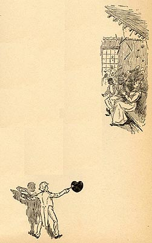

|

Pudd'nhead Wilson makes it hard to decide not just
how the novel as a whole depicts the realities of slavery,
but even how an individual character like Roxy feels about
her own experience as a slave. The moving account of
her despair in Chapter 3, in which she goes from planning
to kill herself and her child to escape slavery to deciding
to switch her baby and her master's child instead, begins
with her rage against the man who claims to own her: "I
hates yo' pappy," she tells the white infant; "I hates him,
en I could kill him!" But by the end of the story Roxy has
become a zealous supporter of Judge Driscoll, the brother
of the man she hated and the novel's other master. She has
no nostalgia for slavery itself: the bill of sale that
guarantees her freedom is "her most precious possession."
But she goes to the book's climactic trial "hat[ing] these
outlandish devils for killing" the Judge, and intending, as
the illustration here depicts, to cheer their conviction:
"When dat verdic' comes, I's gwine to lif' dat roof,
now, I tell you." The page's other illustration shows the District Attorney, in his opening speech, saying that the Judge's murder was "conceived by the blackest of hearts." The Barrett Collection, UVA PS 1317 .A1 1894 |